uMarket Theme
This is the theme help documentation file. Please search this before contacting for support. Note: We do not support theme customizations beyond it's original functionality & appearance.
Live Demo Contact Us1. Getting started
We really appreciate that you bought our template. We hope that it will be serves you well. If your like our template just let us now or you can stay in touch with us through facebook or twitter. It would be great if you recomended us to your friends and colleagues. If you have some questions just send a message we are looking forward to your emails.
Your Pixelized team.2. Feedback
Like our work? Have some problem? Drop us line. We really like to hear about you. Especially we like to see your websites builded on our theme. Don't be shy and send us link to your branded new websites. The best sites we will posted on our Facebook or twitter if you give us your permission. Nothing is better feel than see our theme on working site.
Facebook Twitter3. Plugins
- 3.1 Font-awesome
- 3.2 Smooth Scroll
- 3.3 Magnific Popup
- 3.4 Owl Carousel
- 3.5 Twitter Post Fetcher
- 3.6 Dragtable
- 3.7 Animate
- 3.8 Color Switcher
3.1 Font Awesome
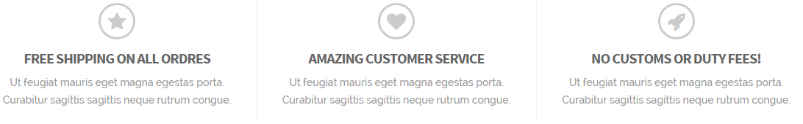{kind=link}
It’s one of the most powerfull tools. Font Awesome gives you scalable vector icons that can instantly be customized — size, color, drop shadow, and anything that can be done with the power of CSS. Let’s take a look. In the index.html you can find few icons in Service section. This is a font awesome so let’s say we wanna change them to more suitable for your purposes. Open the index.html in some editor and find following code.
<i class="fa fa-star"></i>
Here you can change appearance of this icon just simply remove class „fa-star“ and type for instance „fa-money“. Now save the changes and refresh page and icon is different.
For full documentation how to customize this plugin (size, color, rotation etc.) and full list of different types of icons go to fontawesome.io
3.2 Smooth Scroll
If you want to disable this plugin, delete following code on .html page.
<script src="assets/js/SmoothScroll.js"></script>
3.3 Magnific Popup
Magnific Popup is a responsive lightbox & dialog script with focus on performance and providing best experience for user with any device.
For full documentation go to www.dimsemenov.com/plugins/magnific-popup/
3.4 Owl Carousel
We decided replace default bootstrap carousel to amazing Owl carousel. This plugin is used for slideshow on index.html page and other homepages.
This carousel has tons of features it’s a powerfull tool.
For full documentation go to www.owlcarousel.owlgraphic.com
3.5 Twitter Post Fetcher
This plugin is used on the bottom of sidebar in index.html section and displays your latest tweets. You only have to paste your Twitter Widget ID to connect your Twitter account. To do it go to custom.js file and paste your twitter widget ID on the line 311
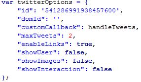{kind=link}
How to find your Twitter Widget ID is described here
For mor information how display your tweets check full documentation of this plugin. jasonmayes.com/projects/twitterApi/
3.6 Dragtable
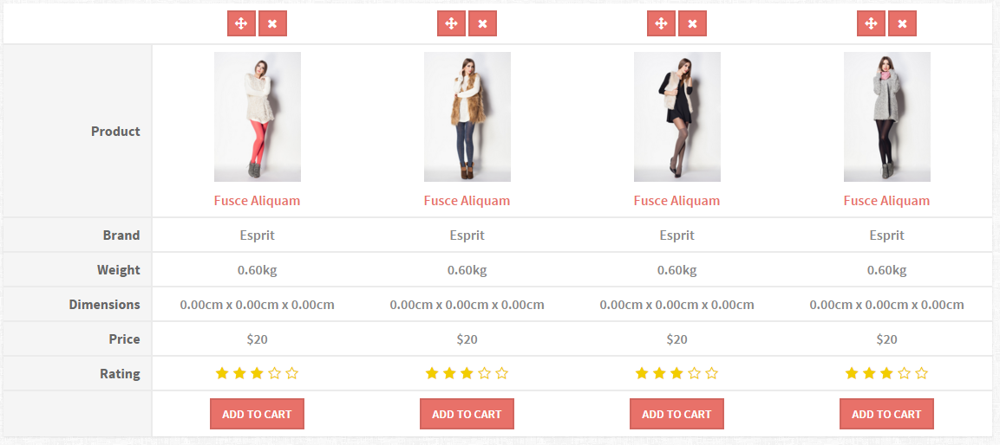{kind=link}
Plugin is used in compare.html page. You can simply move columns in table by dragging on the first button above image.
For full documentation go to akottr.github.io/dragtable/
3.7 Animate
It is awesome CSS3 plugin which allows us to animated individal parts of our themes. This plugin uses Owl Carousel for effects when carousel sliding to another slide.
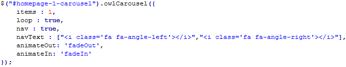{kind=link}
For full documentation go to daneden.github.io/animate.css/
3.8 Color Switcher
It is plugin developed by ourselfs. It allows you to change a color in real time. Basically you can change the whole appereance by yourself.
Now let’s take a look how to set your favourite look.
Setup color
- At first you have to decided which color is best for you.
- Open .html page in some editor.
- To change your color find line 40.
{kind=link}
Now just simply change (underlined word) "red" to the one you choosen on the start of this procedure "blue" now save this change and refres edited page and enjoy.
All colors
| Color | Hex code | Preview |
|---|---|---|
| Red | E87169 | |
| Purple | 9569E8 | |
| Yellow | D9D943 | |
| Blue | 19A5D4 | |
| Dark Blue | 206BA8 | |
| Orange | FA762F | |
| Green | 36BA4A | |
| Brown | BA8C36 | |
| Dark Red | BF1F1F | |
| Light Green | 43E8AC |
Remove ColorSwitcher
When you are done with color changes is no longer necessary to have ColorSwither on your page.
- Open .html files and delete everything between lines 61 - 82 including. On the image below are the lines which you delete. Now the icon of ColorSwitcher on the page is gone.
- Delete file color-switcher.css
- Delete file color-switcher.js
4. Features
- 4.1 Owl Carousel with Animations
- 4.2 Credit Card Icon
- 4.3 Stores - Map
- 4.4 Boxed Layout
- 4.5 Homepage with Video Background
- 4.6 Vertical Navbar
4.1 Owl Carousel with Animations
We created very simple animated carousel. There is used slide effect for headings, paragraphs, lists, etc. Example is used in index.html on every slide.
First you have to add class owl-animation into main element of Owl Carousel.
Now if you want to add some animations to any object. You have add core class animation to the object. Then you have to choose from which side object comes (top-to-bottom). You can also add some delay of slide effect and choose speed of the effect. (default speed is 1000ms)
<i class="fa fa-paper-plane animation top-to-bottom delay-1 slow"></i>
Owl Animation - Classes
- top-to-bottom
- bottom-to-top
- left-to-right
- right-to-left
- delay-1 (500ms)
- delay-2 (1000ms)
- delay-3 (1500ms)
- delay-4 (2000ms)
- delay-5 (2500ms)
- fast (500ms)
- slow (1500ms)
- very-slow (2000ms)
{kind=link}
4.2 Credit Card Icon
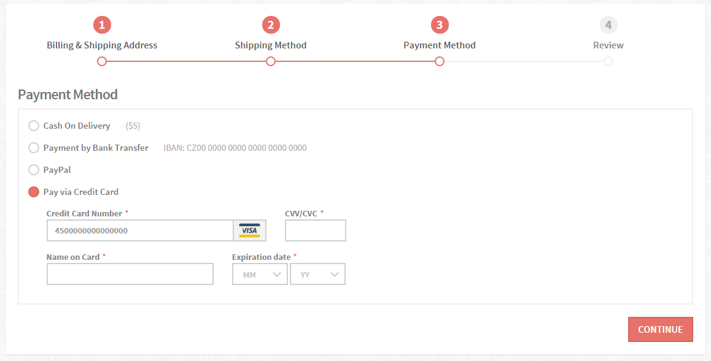{kind=link}
In 3rd step of Checkout Proccess (checkout-payment.html) is used this cool feature. Just click on "Pay via Credit Card" it shows form. When you start typing into "Credit Card Number" input, it will shows some icon in grey box on the right side.
Plugin shows 4 types of credit cards:
- American Express (e.g. 340000000000000)
- MasterCard (e.g. 5500000000000000)
- Visa (e.g. 4500000000000000)
- Discover (e.g. 6500000000000000)
Settings of each credit card you can change in jquery.card.js
Credit Card Icons are in this folder "assets/images/creditcards/"
4.3 Stores - Map
We create very cool feature which shows position of stores in map. There is also description of each store below the map. You can easily change region by choosing value in ComboBox.
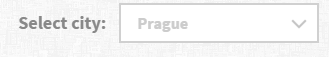{kind=link}
If you want add another region or change coordinates of existing region, just go to custom.js and edit array "regions".
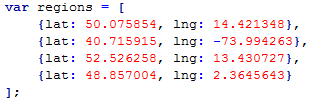{kind=link}
You also have to add new "option" into "select"
<form class="form-inline">
<div class="form-group">
<label for="change-region">Select city:</label>
<select class="form-control" id="change-region">
<option value="1" selected>Prague</option>
<option value="2">New York</option>
<option value="3">Berlin</option>
<option value="4">Paris</option>
</select>
</div>
</form>
Add new map marker
Each reagion have some map markers which are linked to the description below the map.
If you want to add new map marker, just go to custom.js and edit array "coordinates".
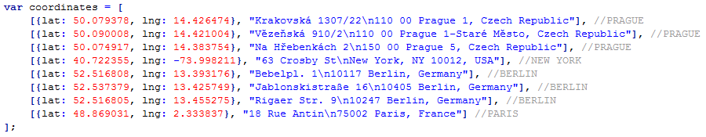{kind=link}
Also store descriptions have to be in descending order by ID attribute and divided into regions.
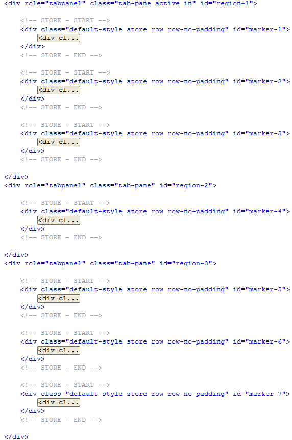{kind=link}
4.4 Boxed Layout
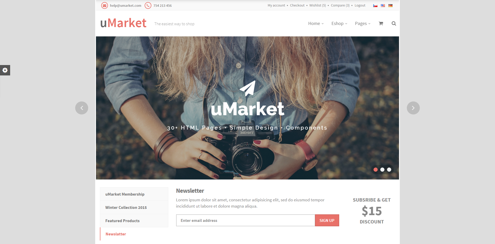{kind=link}
If you want to have boxed layout on your page just add class page-boxed into tag body
<body class="page-boxed">
4.5 Homepage with Video Background
One of our home pages supports video background. It means that you will be able to play video, which is uploaded on youtube, on the background on the top of your homepage. Video background is feature of homepage-6.html
If you want to put your own video you have open homepage-6.html file in some editor and in the "jumbotron" section paste your own video link. You will paste your link insted of link which is underlined on the pictures below.
This kind of link you can find on youtube when you click on "share" below the video. 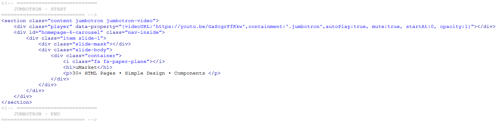
For correct functionality you has to have line, displayed below, on your custom.js. It is plugin initialization.
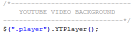You can find full documentation on: pupunzi.open-lab.com
4.6 Vertical Navbar
If you don't like classic header layout, you can use Vertical navbar. Well prepared example is in homepage-5.html (lines 78 - 332)
You can also create vertical navbar from classic header. Just add class "vertical-menu" into tag body
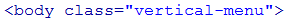Also add following classes into tag header. Class "navbar-dark" is optional.
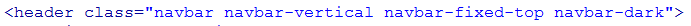5. FAQ
If I buy an Single application license, can I remove your Copyright-Line?
Yes, in any kind of license you definitely can remove copyright. But if you like our work you can place there just "created by pixelized" it is completely up to you.
Can i use, images included in this theme?
In credits section you can find links to every image. So find image you want in credits and check licence on source page.
6. Credits
6. 1 Plugins
- Font Awesome
- Animate
- Dragtable
- Magnific popup
- Owl Carousel
- Twitter Post Fetcher
- Smooth Scroll
- Bootstrap Hover Dropdown
- jQuery mb ytplayer
6. 2 Images - Galery, Slideshow
- Picturefield
- Unsplash - slideshow images
- Clients images
- Credit Card Icons
- Social Icons
- Picjumbo - categories, blog images
Images - Stores
- matt buchanan - Upper West Side Apple Store
- matt buchanan - Upper West Side Apple Store
- matt buchanan - Upper West Side Apple Store
- matt buchanan - Upper West Side Apple Store
- matt buchanan - Upper West Side Apple Store